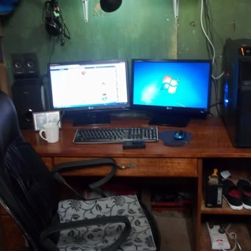
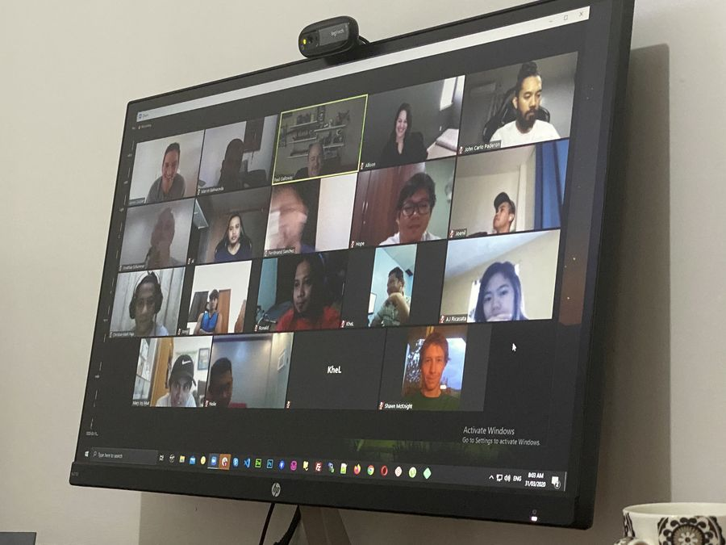
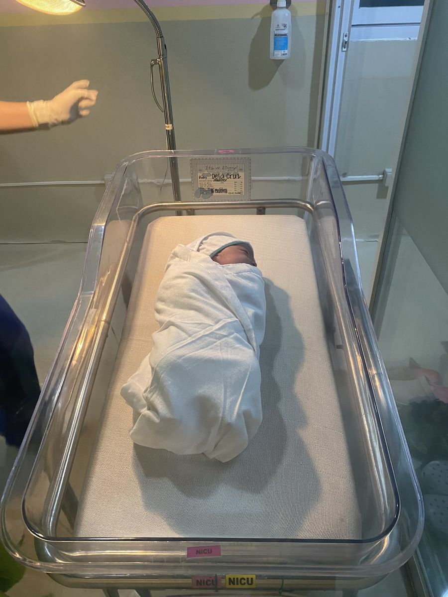
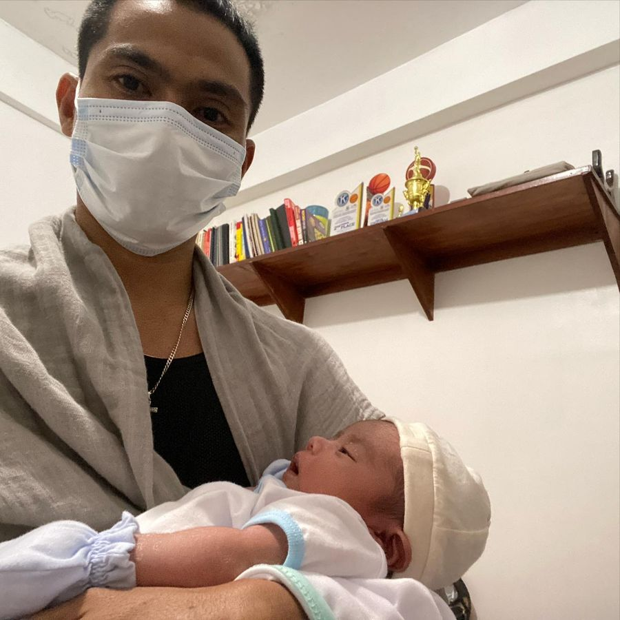
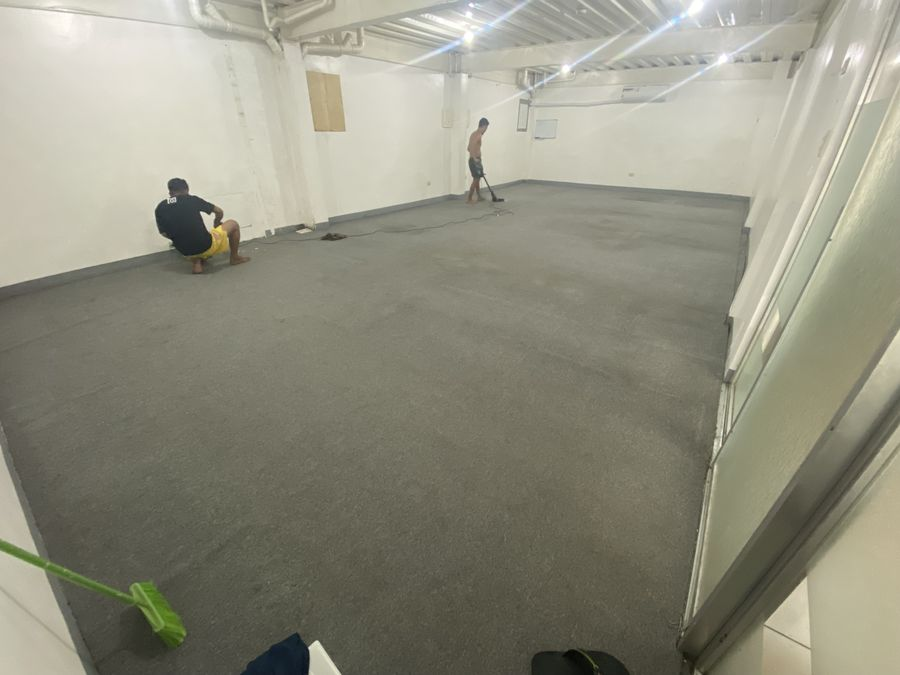
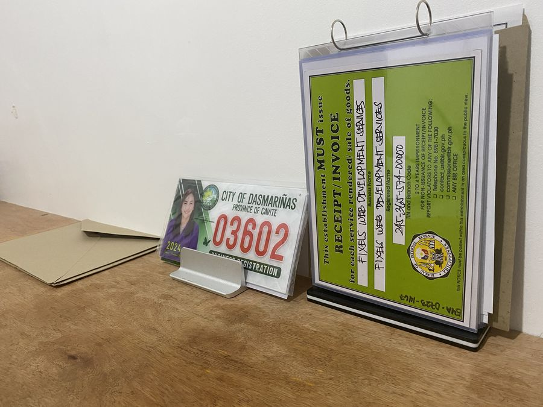
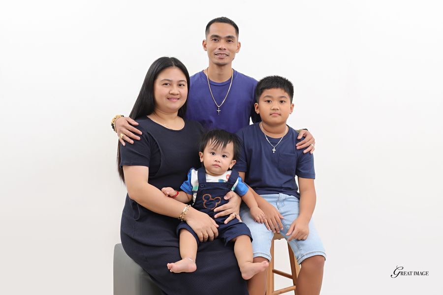
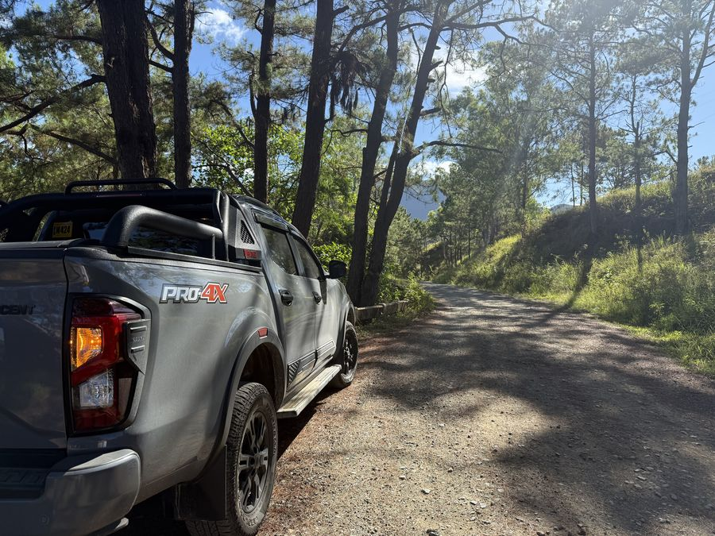

2011
2011

who you'd be working with
I'm Marvin Balmaceda. I've spent a decade as the developer behind personal brands, most of it working directly with the marketing leads, designers and launch managers who need something live by Tuesday.
The names on the client list are not agencies I sat inside. They are sites, funnels, order forms and membership portals I built or rebuilt — often as the person a bigger team brought in when the launch date stopped moving. When a project needs more hands I bring in my studio, Fixels. But you talk to me, and I'm the one in the build.
I work in whatever your team already uses. I document what I change. And I'd rather tell you a timeline is wrong before we start than apologize for it after.
Small on purpose. That is not a discount position — it is the reason nothing gets lost in a hand-off.
Marvin is an expert at his craft and his timeliness is superior. I highly recommend him to anyone interested in his website and integration skills. He is also a great person to work with and a wonderful communicator.
Working with Marvin has been seamless. He's not just technically solid — he's proactive, responsive and solution-oriented. I never had to follow up or micro-manage. If you're a founder looking for a reliable web developer who thinks like a team member, not just a freelancer, Marvin's your guy.
I am very happy with the website that Marvin and his team built for me. I was most impressed with the speed of iteration. Marvin is an excellent communicator and got the project done on budget and on time. Highly recommend.








how I work
I write down what I think you're asking for and send it back before quoting. Half the time that document changes the project — which is cheaper now than later.
If a timeline is wrong, a design won't survive the platform, or the thing you asked for isn't the thing you need, you hear it before I build — not in the retrospective.
What I changed, where it lives, and how to run it. Written for the person who'll inherit it, not for me.
Launch week is when things break. I don't disappear the day the invoice clears, whether or not you're on a care plan.